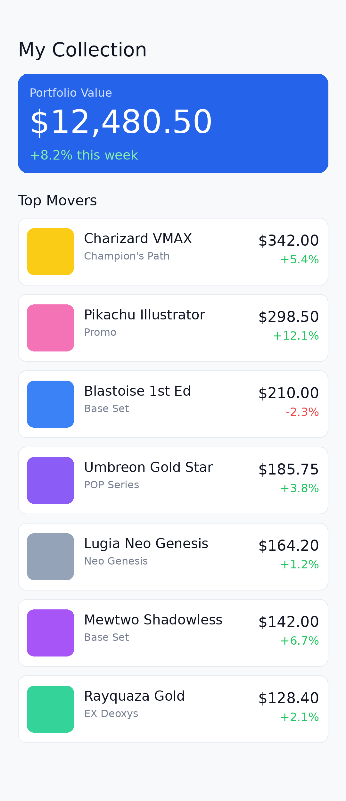

<!-- Example screenshot fragment. Author each screenshot like this: a `.stage` using
     classes from design/base.css. render.py supplies fonts + styles and renders it.
     Positions (top/right) are set inline because they vary per composition. -->
<div class="stage">
  <svg class="motif" viewBox="0 0 1290 2796" preserveAspectRatio="none">
    <polyline points="-50,1520 200,1420 380,1490 560,1250 760,1340 980,1040 1200,1120 1360,840"/>
  </svg>

  <div class="kicker"><span>PORTFOLIO TRACKER</span></div>
  <h1>TRACK</h1>
  <h2>TRADING CARD <span class="accent">PRICES</span></h2>

  <div class="phone">
    <div class="notch"></div>
    <div class="screen">
      
    </div>
  </div>

  <div class="badge" style="top:1600px; right:74px;">+$948 today</div>

  <div class="breakout" style="top:1820px;">
    <div class="lbl">Portfolio Value</div>
    <div class="val">$12,480.50</div>
    <div class="pill">&#9650; +8.2% this week</div>
    <svg class="spark" viewBox="0 0 320 120">
      <polyline points="0,98 48,82 96,90 148,55 198,66 250,28 320,18"/>
    </svg>
  </div>
</div>
